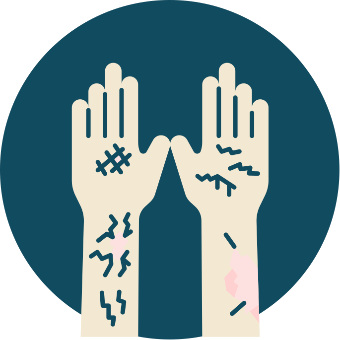
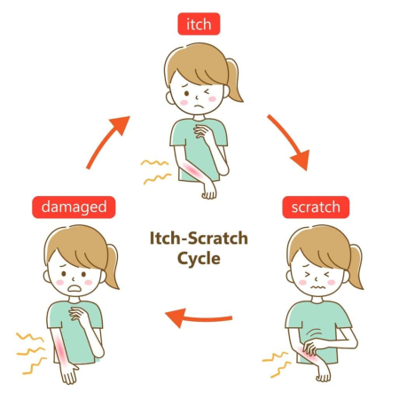
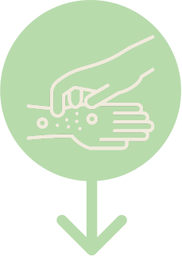

Breaking the Itch–Scratch Cycle
Credits: Parsa Abdi, BEng; Kevin Li BSc MSPH
Dr. Marlene Dytoc MD, PhD, FRCPC
Designed by: Danting Zheng BSc Undergraduate


What We'll Learn About Itch
By the end of this module, you'll be able to:
What is an Itch?
Itch is your body's way of telling you something is irritating your skin.
In eczema, the skin becomes dry, inflamed, and very sensitive.
Even small things, like heat or sweat, can make it feel itchy.

The Itch–Scratch Cycle
In eczema, itch doesn't just come and go… it feeds on itself.
- Itch causes scratching
- Scratching causes skin damage
- Damaged skin leads to more itch
This creates a vicious cycle that makes eczema worse over time.

The brain and skin are closely connected — your feelings can shape how itchy you feel.
Some people scratch without realizing it — like when they feel nervous or distracted.
Feeling stressed can make the skin more sensitive and itch harder to ignore.
Some people scratch more when they're tired or having a tough day.
Physical Triggers for Itch
- Soaps, shampoos, or detergents with fragrance or harsh ingredients.
- Heat and sweat.
- Dry air or sudden weather changes.
- Rough fabrics like wool or polyester.
- Dust, pet dander, or pollen.
- Long, hot baths or showers.
Why Itch Gets Worse at Night
Four reasons the darkness makes itch harder to handle.
Fewer Distractions
Without the day's activity to occupy your mind, itch signals get your full attention.
Cortisol Dips
Your body's natural anti-inflammatory cortisol drops overnight, reducing its suppression of itch.
Body Temperature
Bed warmth raises your core temperature, which intensifies nerve itch signals in the skin.

Skin Dryness
Skin loses moisture overnight — especially in heated bedrooms — worsening the itch barrier breakdown.
Habit Reversal Therapy
Notice the Urge
Build awareness of the moment the scratching urge arises — before your hand moves automatically.
Use a Competing Response
Replace scratching with a deliberate action: clench your fist, press your palm flat, or apply firm pressure to the itch site.
Practise Consistently
Over time, the competing response becomes your new automatic reaction — and the scratching habit weakens.
Practice worksheet
Habit Reversal Therapy Worksheet
Notice your scratch pattern, pick a competing response, and track your urges over 1–2 weeks.

Soak & Seal — and Wet Wraps
Moisture locked in quickly makes a measurable difference.
Warm bath or shower (5–10 min)
Warm — not hot. Hot water strips the skin barrier and worsens inflammation.
Pat gently — leave slightly damp
Damp skin absorbs moisturizer more effectively than completely dry skin.
Apply thick moisturizer within 3 minutes
Use a cream or ointment — not a lotion, which is too watery and evaporates quickly.
Step-by-step guide
Wet Wrap Therapy
A printable checklist for each step — including what to watch for and when to call your clinic.
Protecting Your Sleep
Small changes at bedtime can significantly reduce night scratching.
- Keep your room coolA cooler bedroom (16–18°C) reduces the temperature rise that intensifies itch at night.
- Wear soft cotton glovesThey limit the damage from unconscious scratching during sleep.
- Keep nails short and smoothShort nails cause far less skin damage if scratching happens.
- Soak & Seal before bedLocks in hydration and reduces overnight dryness and itch.